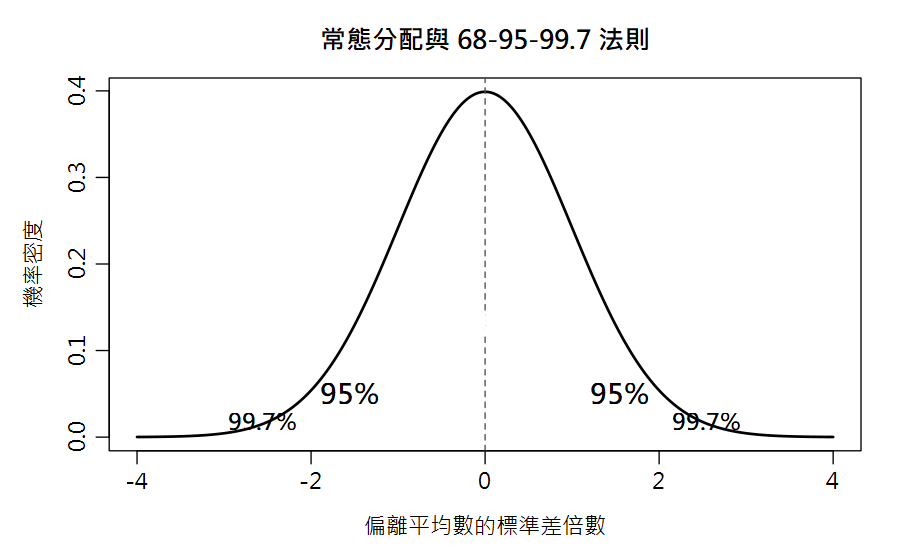

常態分配與信賴區間 Normal Distribution, Z & t, Confidence Interval
主管問：「這批油的酸價標準上限是 4，你測出 3.8，過不過？」你心裡沒底——因為你只測了 3 次。這一章教你用「區間」代替「猜測」。
本章新詞先認識：常態分配＝鐘形分布；68-95-99.7 法則＝±1/±2/±3 SD 內的面積口訣；信賴區間 CI＝真值的可能範圍。
名詞卡住了？回 Ch0 名詞圖鑑 查白話解釋與比喻。
- 說出常態分配的 68–95–99.7 法則
- 知道大樣本用 Z、小樣本（食品分析日常）用 t
- 會計算 95% 信賴區間並正確解讀其意義
- 了解標準誤 SEM = SD/\(\sqrt{n}\)，以及「增加重複次數」的邊際效益
2.1 常態分配：隨機誤差的長相
只受隨機誤差影響的重複量測，數據會呈鐘形分布。它的特性用「標準差倍數」就能記憶：

# R 直接算常態機率：pnorm(上界) - pnorm(下界) pnorm(1) - pnorm(-1) #> 0.6827 (68%) pnorm(2) - pnorm(-2) #> 0.9545 (95%) pnorm(3) - pnorm(-3) #> 0.9973 (99.7%)
[1] 0.6826895 [1] 0.9544997 [1] 0.9973002
2.2 Z 值：大樣本（n>30）時的信賴區間
| 信心水準 | 80% | 90% | 95% | 99% | 99.9% |
|---|---|---|---|---|---|
| Z 值 | 1.29 | 1.64 | 1.96 | 2.58 | 3.29 |
課本 Table 4.2 的 80% 那一欄列的是 1.29；R 的 qnorm(0.90) 精確值為
1.2816（四捨五入約 1.28），差異來自課本查表時的捨入，不是計算錯誤。
課本範例：假設水分測了 n=25 次，x̄=64.72、SD=0.2927：
CI = 64.72 ± 1.96 × 0.2927/\(\sqrt{25}\) = 64.72 ± 0.115%。
其中 SD/\(\sqrt{n}\) 這一項稱為平均數標準誤（SEM）——它才是「平均值」的不準度，
比單次量測的 SD 小 \(\sqrt{n}\) 倍。
2.3 t 值：小樣本才是食品分析的日常
實務上我們只做 3~5 次重複。小樣本的 SD 本身不可靠，必須改用 t 分布（較胖的鐘形）：
水分範例（n=4，df=3，95%）：t = 3.18
CI = 64.72 ± 3.18 × 0.2927/\(\sqrt{4}\) = 64.72 ± 0.465%，即 64.255 ~ 65.185%
（課本用查表值 t=3.18 手算得 0.465；R 用完整精度 t=3.182446 得 0.466，即 64.249 ~ 65.181%——差異只是捨入，下文一律採 R 的完整精度結果）。
注意：同樣的數據，小樣本的 ±0.466% 遠寬於 n=25 時的 ±0.115% —— 這就是「重複次數的價值」。
moisture <- c(64.53, 64.45, 65.10, 64.78) xbar <- mean(moisture); s <- sd(moisture); n <- length(moisture) qt(0.975, df = 3) #> 3.182446 (=課本 t 值 3.18) half <- qt(0.975, n-1) * s / sqrt(n) round(half, 3) #> 0.466 round(xbar + c(-1,1) * half, 3) #> 64.249 65.181 -> 報告：64.72 ± 0.47 % (95%, n=4) # 標準誤 SEM s / sqrt(n) #> 0.1463
[1] 3.182446 [1] 0.466 [1] 64.249 65.181 [1] 0.1463159
2.4 動手驗證：「95% 信心」是真的嗎？
我們讓電腦重複做 1000 次實驗（每次抽 4 個數據、算一個 95% CI）， 數數看有多少次 CI 真的蓋住真值 65.05%：
set.seed(2024) # 固定亂數種子，結果可重現
true_mu <- 65.05
hits <- 0
for (i in 1:1000) {
samp <- rnorm(4, mean = true_mu, sd = 0.293) # 虛擬 4 次量測
ci <- mean(samp) + c(-1,1) * qt(0.975,3) * sd(samp)/sqrt(4)
if (true_mu >= ci[1] && true_mu <= ci[2]) hits <- hits + 1
}
hits / 1000
#> [1] 0.944 -> 94.4%，接近 95%：理論兌現！
[1] 0.944
📊 Excel 也會算：信賴區間
⬇ 下載本章 Excel 活頁簿 數據、公式、白話說明都排好了，打開就能算；改黃色儲存格試試看，最後一張工作表會幫你和 R 的答案對照。
水分資料放A1:A4。小樣本用 t 分布（T.INV），大樣本或已知 σ 才用 Z（NORM.S.INV）。| 任務 | Excel 公式 | 說明 |
|---|---|---|
| t 值 (df=3, 95%) | =T.INV.2T(0.05, 3) | → 3.182（雙尾） |
| 95% CI 半寬 | =T.INV.2T(0.05,3)*STDEV(A1:A4)/SQRT(4) | → 0.466 |
| CI 下/上限 | =AVERAGE(A1:A4)±半寬 | 64.249 ~ 65.181 |
| 標準誤 SEM | =STDEV(A1:A4)/SQRT(4) | → 0.1463 |
| 常態機率 68/95/99.7 | =NORM.S.DIST(1,TRUE)-NORM.S.DIST(-1,TRUE) | → 0.6827 |
T.INV.2T(0.05,df) 直接給雙尾 95% 的 t；若用 T.INV(0.975,df) 也行，兩者同值。